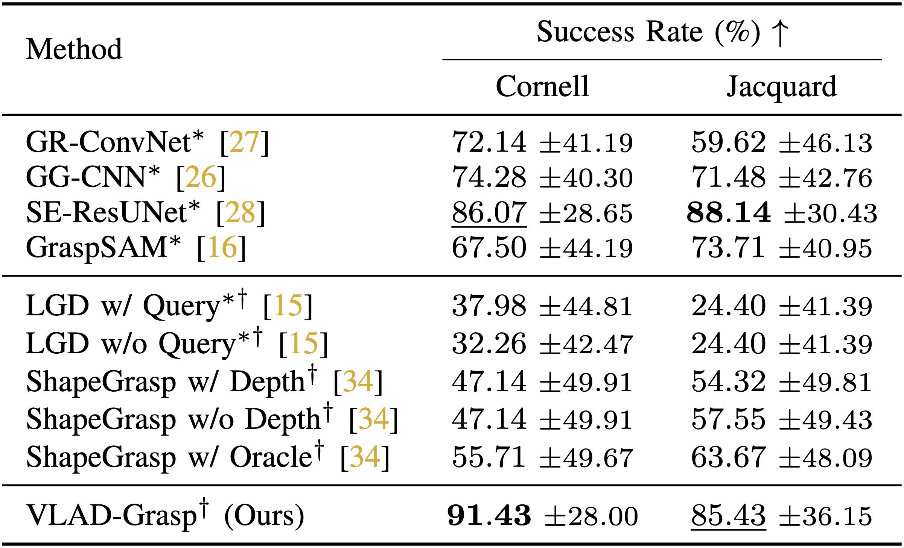

Real Robot Demonstrations
Abstract
Robotic grasping is a fundamental capability for enabling autonomous manipulation, with usually infinite solutions. State-of-the-art approaches for grasping rely on learning from large-scale datasets comprising expert annotations of feasible grasps. Curating such datasets is challenging, and hence, learning-based methods are limited by the solution coverage of the dataset, and require retraining to handle novel objects. Towards this, we present VLAD-Grasp, a Vision-Language model Assisted zero-shot approach for Detecting Grasps. Our method (1) prompts a large vision-language model to generate a goal image where a virtual cylindrical proxy intersects the object's geometry, explicitly encoding an antipodal grasp axis in image space, then (2) predicts depth and segmentation to lift this generated image into 3D, and (3) aligns generated and observed object point clouds via principal components and correspondence-free optimization to recover an executable grasp pose. Unlike prior work, our approach is training-free and does not require curated grasp datasets, while achieving performance competitive with the state-of-the-art methods on the Cornell and Jacquard datasets. Furthermore, we demonstrate zero-shot generalization to real-world objects on a Franka Research 3 robot, highlighting vision-language models as powerful priors for robotic manipulation.
Results

Comparison with baseline methods on the Cornell and Jacquard datasets. Following prior work, a grasp is deemed successful if its associated rectangle has an Intersection-over-Union metric \(\geq 25\%\) with at least one ground-truth annotation. Training on expert grasps is denoted by \((*)\), and language guidance is denoted by \((\dagger)\). ShapeGrasp w/ Oracle denotes an upper bound on ShapeGrasp's confidence-based depth heuristic, reporting success if either the depth or no-depth variant succeeds.
Video Presentation
BibTeX
@article{kulshrestha2025vlad,
title={VLAD-Grasp: Zero-shot Grasp Detection via Vision-Language Models},
author={Kulshrestha, Manav and Bukhari, S Talha and Conover, Damon and Bera, Aniket},
journal={2026 IEEE/RSJ International Conference on Intelligent Robots and Systems (IROS)},
year={2026},
organization={IEEE},
url={https://arxiv.org/abs/2511.05791}
}